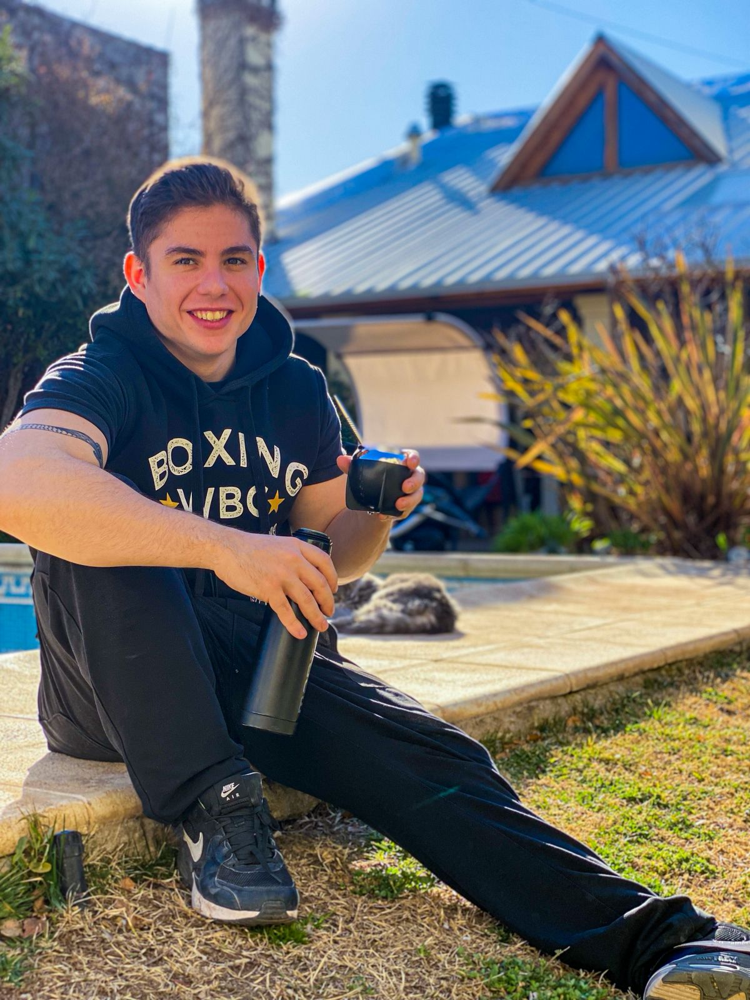
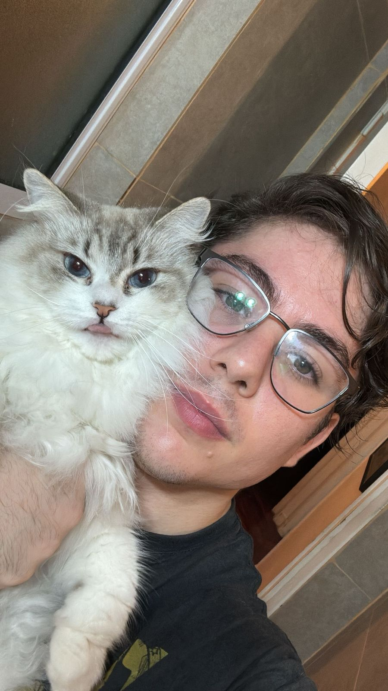
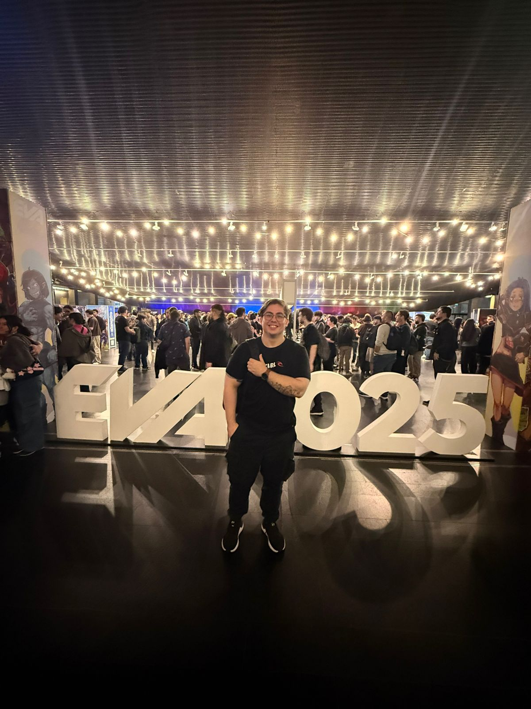

itch.io
itch.io
 LinkedIn
LinkedIn
 GitHub
GitHub
 Download CV
Download CV
Erick Barron
Game Developer & Programmer
I am a game developer with a passion for creating games that are fun and engaging. With experience on multiple personal projects and in the industry, I have a strong understanding of the game development process and the challenges that come with it.



Featured Project
RECursion
RECursion is a horror puzzle game inspired by the backrooms lore. This project grew from a simple idea my team and I had for one of our classes. We decided to take the game beyond the classroom and eventually release it on Steam. Our team is composed of talented programmers, designers, and artists who are passionate not only about their creations but also about games in general. If you wish to support our work, you can learn about RECursion on the Steam website or play an old build on itch.io.